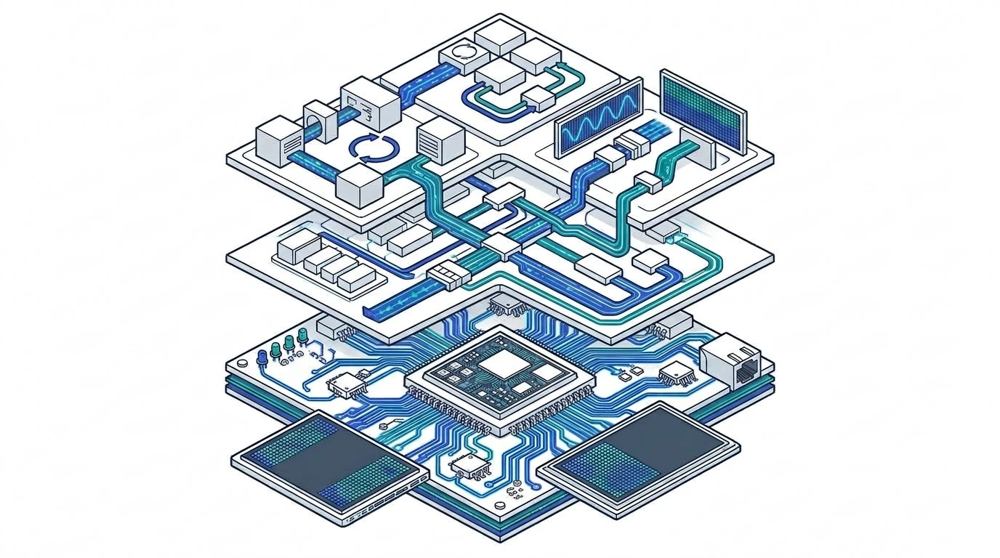
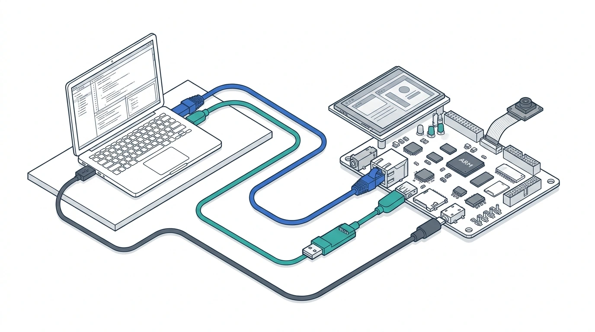

第 01–21 天 · 先学应用
完整学完《C应用编程指南 V1.6》34 章，掌握系统调用、多进程多线程并发、epoll、音视频与物联网实战。
第 22–32 天 · 裸机筑基
速通 Ubuntu/Makefile 后精研 I.MX6U 汇编启动、IOMUXC、CCM 时钟树、GIC 中断与常见外设寄存器。
第 33–39 天 · 系统移植
拆解 U-Boot 重定位与 bootz 引导链路，独立完成自定义板级 U-Boot、Linux 内核、设备树与根文件系统移植。
第 40–60 天 · 驱动收官
逐一攻克字符设备、设备树、并发锁、中断、platform、I2C/SPI/触控/音频/块设备/双网口/IIO 与 GDB 远程调试。
先掌握用户态系统调用与设备节点抽象，再深入内核子系统与硬件寄存器可显著降低驱动学习陡峭度

示意图：顶层对应前 21 天用户态 C 应用层（文件 I/O、FrameBuffer、V4L2、ALSA、Socket），中层对应 VFS 与内核驱动框架边界，底层对应后 39 天 I.MX6ULL SoC 寄存器与板级外设电路。
八个学习模块
环境配置按步骤快速过一遍，音频、U-Boot 和设备树等章节多留时间读代码和调试。
第四篇 ARM Linux 驱动开发以 152 学时占据全周期近三分之一，是决定内核工程深度的核心战役
数据来源：《【正点原子】I.MX6U嵌入式Linux C应用编程指南V1.6.pdf》（P20–P1115）与《【正点原子】I.MX6U嵌入式Linux驱动开发指南V2.0.1.pdf》（P7–P1963）完整书签目录测算。
学习方法与实验环境
每天按 8 小时规划进度，具体时间根据章节难度分配。
- 应用编程（第 01–21 天） 先读懂接口和示例，再用 GCC 或 CMake 在 Ubuntu 中编译、运行。遇到依赖外设的章节，先用普通文件、样例数据、伪终端或本机网络练习能拆出的部分。复习时试着脱离教材说明调用顺序，并重做容易出错的例程。
- 驱动开发（第 22–60 天） 随进度准备交叉编译环境。从裸机实验开始，按章节使用 I.MX6U 开发板验证硬件、系统移植与驱动。有合适的驱动后，再复用应用篇的用户态例程测试接口。
六十天学习斜率随代码密度动态调速，在三大关键节点完成从应用工程师到内核驱动工程师的跃迁
推进节奏说明：D01–D21 完成《应用编程指南》全部 1,096 页正文；D22–D39 完成 Ubuntu、裸机与系统移植 1,046 页；D40–D60 集中火力攻克 911 页内核驱动与工程附录。
第一阶段逐日详细安排（第 01–21 天）：《I.MX6U嵌入式Linux C应用编程指南 V1.6》
本阶段共计 21 天（168 学时），按章节先后顺序完整覆盖《C应用编程指南 V1.6》前言、入门篇（第 1–14 章）、提高篇（第 15–31 章）与进阶篇（第 32–34 章）的全部 622 个章节与小节节点。练习以 Ubuntu 为主，外设相关章节先阅读接口与例程，实机效果留到驱动阶段验证。
第 01 天
P20–P59 · 40页 · 累计 8h
应用编程指南 V1.6 · 第一篇 入门篇
第 02 天
P60–P102 · 43页 · 累计 16h
应用编程指南 V1.6 · 第一篇 入门篇
第 03 天
P103–P141 · 39页 · 累计 24h
应用编程指南 V1.6 · 第一篇 入门篇
第 04 天
P142–P193 · 52页 · 累计 32h
应用编程指南 V1.6 · 第一篇 入门篇
第 05 天
P194–P252 · 59页 · 累计 40h
应用编程指南 V1.6 · 第一篇 入门篇
第 06 天
P253–P307 · 55页 · 累计 48h
应用编程指南 V1.6 · 第一篇 入门篇
- 第七章 系统信息与系统资源（续）
- 第八章 信号：基础
第 07 天
P308–P376 · 69页 · 累计 56h
应用编程指南 V1.6 · 第一篇 入门篇
第 08 天
P377–P431 · 55页 · 累计 64h
应用编程指南 V1.6 · 第一篇 入门篇
第 09 天
P432–P480 · 49页 · 累计 72h
应用编程指南 V1.6 · 第一篇 入门篇
第 10 天
P481–P511 · 31页 · 累计 80h
应用编程指南 V1.6 · 第一篇 入门篇
第 11 天
P512–P564 · 53页 · 累计 88h
应用编程指南 V1.6 · 第二篇 提高篇
- 第十五章 点亮LED
- 第十六章 GPIO应用编程
- 第十七章 输入设备应用编程
第 12 天
P565–P628 · 64页 · 累计 96h
应用编程指南 V1.6 · 第二篇 提高篇
- 第十八章 使用tslib库
- 第十九章 FrameBuffer应用编程
- 第二十章 在LCD上显示jpeg图像
第 13 天
P629–P696 · 68页 · 累计 104h
应用编程指南 V1.6 · 第二篇 提高篇
- 第二十一章 在LCD上显示png图片
- 第二十二章 LCD横屏切换为竖屏
- 第二十三章 在LCD上显示字符
第 14 天
P697–P739 · 43页 · 累计 112h
应用编程指南 V1.6 · 第二篇 提高篇
- 第二十四章 PWM应用编程
- 第二十五章 V4L2摄像头应用编程
第 15 天
P740–P786 · 47页 · 累计 120h
应用编程指南 V1.6 · 第二篇 提高篇
- 第二十六章 串口应用编程
- 第二十七章 看门狗应用编程
- 第二十八章 音频应用编程
第 16 天
P787–P848 · 62页 · 累计 128h
应用编程指南 V1.6 · 第二篇 提高篇
第 17 天
P849–P907 · 59页 · 累计 136h
应用编程指南 V1.6 · 第二篇 提高篇
- 第二十八章 音频应用编程（续）
- 第二十九章 网络基础知识
第 18 天
P908–P943 · 36页 · 累计 144h
应用编程指南 V1.6 · 第二篇 提高篇
- 第三十章 socket编程基础
- 第三十一章 CAN应用编程基础
第 19 天
P944–P1029 · 86页 · 累计 152h
应用编程指南 V1.6 · 第三篇 进阶篇
第 20 天
P1030–P1098 · 69页 · 累计 160h
应用编程指南 V1.6 · 第三篇 进阶篇
第 21 天
P1099–P1115 · 17页 · 累计 168h
应用编程指南 V1.6 · 第三篇 进阶篇
第 01–21 天
C 应用编程
在 Ubuntu 练习文件 I/O 与并发编程，熟悉 /dev 和 /sys 提供的用户态设备接口。
→
第 22–60 天
系统移植与驱动开发
从工具链与 Cortex-A7 裸机起步，练习 U-Boot、内核移植、设备树与驱动。
第二阶段逐日详细安排（第 22–60 天）：《I.MX6U嵌入式Linux驱动开发指南 V2.0.1》
本阶段共计 39 天（312 学时），完整覆盖《驱动开发指南 V2.0.1》开发板适配表、前言、Ubuntu 入门篇（第 1–3 章）、裸机开发篇（第 4–29 章）、系统移植篇（第 30–39 章）、ARM Linux 驱动开发篇（第 40–76 章）以及附录 A/B/C（第 A1–C1 章）的全部 1,149 个章节与小节节点。
驱动篇实验环境 · TFTP 引导与 NFS 根文件系统

实验台标准联调拓扑：蓝色以太网线承载 U-Boot TFTP 内核拉取与 Linux NFS 根文件系统共享，青色串口线承载终端交互与内核 dmesg 实时打印，免除频繁插拔 SD 卡开销。
第 22 天
P7–P108 · 102页 · 累计 176h
驱动开发指南 V2.0.1 · 第一篇 Ubuntu系统入门篇
- ALPHA/Mini开发板教程适配表
- 前言
- 第一章 Ubuntu系统安装
- 第二章 Ubuntu系统入门
第 23 天
P109–P154 · 46页 · 累计 184h
驱动开发指南 V2.0.1 · 第一篇 Ubuntu系统入门篇
- 第二章 Ubuntu系统入门（续）
- 第三章 Linux C编程入门
第 24 天
P155–P222 · 68页 · 累计 192h
驱动开发指南 V2.0.1 · 第二篇 裸机开发篇
第 25 天
P223–P287 · 65页 · 累计 200h
驱动开发指南 V2.0.1 · 第二篇 裸机开发篇
- 第五章 I.MX6U-ALPHA/Mini开发平台介绍
第 26 天
P288–P343 · 56页 · 累计 208h
驱动开发指南 V2.0.1 · 第二篇 裸机开发篇
- 第六章 Cortex-A7 MPCore架构
- 第七章 ARM汇编基础
- 第八章 汇编LED灯实验
- 第九章 I.MX6U启动方式详解
第 27 天
P344–P405 · 62页 · 累计 216h
驱动开发指南 V2.0.1 · 第二篇 裸机开发篇
- 第十章 C语言版LED灯实验
- 第十一章 模仿STM32驱动开发格式实验
- 第十二章 官方SDK移植实验
- 第十三章 BSP工程管理实验
- 第十四章 蜂鸣器实验
- 第十五章 按键输入实验
第 28 天
P406–P463 · 58页 · 累计 224h
驱动开发指南 V2.0.1 · 第二篇 裸机开发篇
- 第十六章 主频和时钟配置实验
- 第十七章 GPIO中断实验
第 29 天
P464–P524 · 61页 · 累计 232h
驱动开发指南 V2.0.1 · 第二篇 裸机开发篇
- 第十八章 EPIT定时器实验
- 第十九章 定时器按键消抖实验
- 第二十章 高精度延时实验
- 第二十一章UART串口通信实验
- 第二十二章 串口格式化函数移植实验
第 30 天
P525–P591 · 67页 · 累计 240h
驱动开发指南 V2.0.1 · 第二篇 裸机开发篇
- 第二十三章 DDR3实验
- 第二十四章 RGBLCD显示实验
第 31 天
P592–P634 · 43页 · 累计 248h
驱动开发指南 V2.0.1 · 第二篇 裸机开发篇
- 第二十五章 RTC实时时钟实验
- 第二十六章 I2C实验
第 32 天
P635–P694 · 60页 · 累计 256h
驱动开发指南 V2.0.1 · 第二篇 裸机开发篇
- 第二十七章 SPI实验
- 第二十八章 多点电容触摸屏实验
- 第二十九章 LCD背光调节实验
第 33 天
P695–P739 · 45页 · 累计 264h
驱动开发指南 V2.0.1 · 第三篇 系统移植篇
第 34 天
P740–P787 · 48页 · 累计 272h
驱动开发指南 V2.0.1 · 第三篇 系统移植篇
第 35 天
P788–P842 · 55页 · 累计 280h
驱动开发指南 V2.0.1 · 第三篇 系统移植篇
第 36 天
P843–P910 · 68页 · 累计 288h
驱动开发指南 V2.0.1 · 第三篇 系统移植篇
- 第三十二章 U-Boot启动流程详解（续）
- 第三十三章 U-Boot移植
第 37 天
P911–P958 · 48页 · 累计 296h
驱动开发指南 V2.0.1 · 第三篇 系统移植篇
- 第三十四章 U-Boot图形化配置及其原理
- 第三十五章 Linux内核顶层Makefile详解
第 38 天
P959–P1008 · 50页 · 累计 304h
驱动开发指南 V2.0.1 · 第三篇 系统移植篇
- 第三十六章 Linux内核启动流程
- 第三十七章 Linux内核移植
第 39 天
P1009–P1052 · 44页 · 累计 312h
驱动开发指南 V2.0.1 · 第三篇 系统移植篇
第 40 天
P1053–P1093 · 41页 · 累计 320h
驱动开发指南 V2.0.1 · 第四篇 ARM Linux驱动开发篇
- 第四十章 字符设备驱动开发
- 第四十一章 嵌入式Linux LED驱动开发实验
第 41 天
P1094–P1149 · 56页 · 累计 328h
驱动开发指南 V2.0.1 · 第四篇 ARM Linux驱动开发篇
- 第四十二章 新字符设备驱动实验
- 第四十三章 Linux设备树
第 42 天
P1150–P1193 · 44页 · 累计 336h
驱动开发指南 V2.0.1 · 第四篇 ARM Linux驱动开发篇
- 第四十四章 设备树下的LED驱动实验
- 第四十五章 pinctrl和gpio子系统实验
第 43 天
P1194–P1242 · 49页 · 累计 344h
驱动开发指南 V2.0.1 · 第四篇 ARM Linux驱动开发篇
- 第四十六章 Linux蜂鸣器实验
- 第四十七章 Linux并发与竞争
- 第四十八章 Linux并发与竞争实验
第 44 天
P1243–P1294 · 52页 · 累计 352h
驱动开发指南 V2.0.1 · 第四篇 ARM Linux驱动开发篇
- 第四十九章 Linux按键输入实验
- 第五十章 Linux 内核定时器实验
- 第五十一章 Linux中断实验
第 45 天
P1295–P1333 · 39页 · 累计 360h
驱动开发指南 V2.0.1 · 第四篇 ARM Linux驱动开发篇
- 第五十二章 Linux阻塞和非阻塞IO实验
- 第五十三章 异步通知实验
第 46 天
P1334–P1370 · 37页 · 累计 368h
驱动开发指南 V2.0.1 · 第四篇 ARM Linux驱动开发篇
- 第五十四章 platform设备驱动实验
- 第五十五章 设备树下的platform驱动编写
第 47 天
P1371–P1416 · 46页 · 累计 376h
驱动开发指南 V2.0.1 · 第四篇 ARM Linux驱动开发篇
- 第五十六章 Linux自带的LED灯驱动实验
- 第五十七章 Linux MISC驱动实验
- 第五十八章 Linux INPUT子系统实验
第 48 天
P1417–P1447 · 31页 · 累计 384h
驱动开发指南 V2.0.1 · 第四篇 ARM Linux驱动开发篇
- 第五十九章 Linux LCD驱动实验
- 第六十章 Linux RTC驱动实验
第 49 天
P1448–P1481 · 34页 · 累计 392h
驱动开发指南 V2.0.1 · 第四篇 ARM Linux驱动开发篇
第 50 天
P1482–P1537 · 56页 · 累计 400h
驱动开发指南 V2.0.1 · 第四篇 ARM Linux驱动开发篇
- 第六十二章 Linux SPI驱动实验
- 第六十三章 Linux RS232/485/GPS驱动实验
第 51 天
P1538–P1575 · 38页 · 累计 408h
驱动开发指南 V2.0.1 · 第四篇 ARM Linux驱动开发篇
第 52 天
P1576–P1632 · 57页 · 累计 416h
驱动开发指南 V2.0.1 · 第四篇 ARM Linux驱动开发篇
- 第六十五章 Linux 音频驱动实验
- 第六十六章 Linux CAN驱动实验
第 53 天
P1633–P1683 · 51页 · 累计 424h
驱动开发指南 V2.0.1 · 第四篇 ARM Linux驱动开发篇
- 第六十七章 Linux USB驱动实验
- 第六十八章 Linux 块设备驱动实验
第 54 天
P1684–P1715 · 32页 · 累计 432h
驱动开发指南 V2.0.1 · 第四篇 ARM Linux驱动开发篇
第 55 天
P1716–P1752 · 37页 · 累计 440h
驱动开发指南 V2.0.1 · 第四篇 ARM Linux驱动开发篇
第 56 天
P1753–P1795 · 43页 · 累计 448h
驱动开发指南 V2.0.1 · 第四篇 ARM Linux驱动开发篇
- 第七十章 Linux WIFI驱动实验
- 第七十一章 Linux 4G通信实验
第 57 天
P1796–P1828 · 33页 · 累计 456h
驱动开发指南 V2.0.1 · 第四篇 ARM Linux驱动开发篇
- 第七十二章 RGB转HDMI实验
- 第七十三章 Linux PWM驱动实验
- 第七十四章 Regmap API实验
第 58 天
P1829–P1890 · 62页 · 累计 464h
驱动开发指南 V2.0.1 · 第四篇 ARM Linux驱动开发篇
- 第七十五章 Linux IIO驱动实验
- 第七十六章 Linux ADC驱动实验
第 59 天
P1891–P1934 · 44页 · 累计 472h
驱动开发指南 V2.0.1 · 附录A与附录B（上）系统构建与服务移植
- 第A1章 Buildroot根文件系统构建
- 第A2章 Yocto根文件系统构建
- 第A3章 Ubuntu-base根文件系统构建
- 第B1章 开发板FTP服务器移植与搭建
- 第B2章节 开发板OpenSSH移植与使用
第 60 天
P1935–P1963 · 29页 · 累计 480h
驱动开发指南 V2.0.1 · 附录B（下）与附录C 远程调试与全栈收官
- 第B3章节 嵌入式GDB调试搭建与使用
- 第B4章节 VSCode+gdbserver图形化调试
- 第C1章 ADC实验